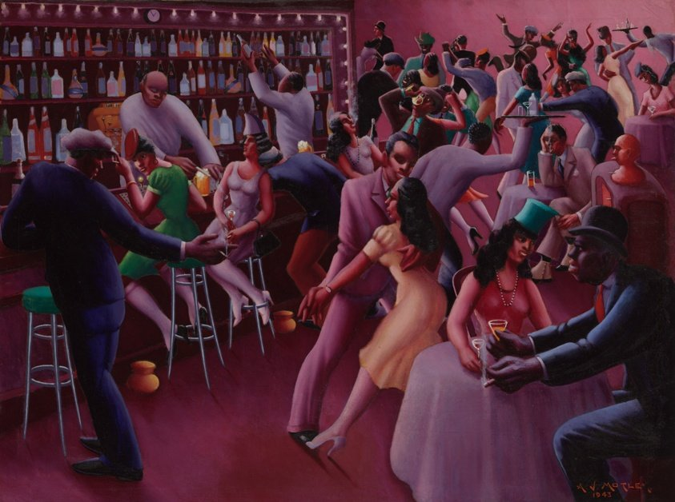

Nightlife
Archibald John Motley Jr. · 1943 · Oil on canvas · 91.4 × 121.3 cm · Art Institute of Chicago
In copyright. Look and learn: shown for study, not for download.
Motley was moved to paint Nightlife in part by Edward Hopper's Nighthawks, which had entered the Art Institute of Chicago's collection the year before. The cabaret is in Bronzeville, on Chicago's South Side. He was fifty-one or fifty-two. The painting belonged to Costella M. Gwin of Chicago by 1985, and her heir sold it to the Art Institute in 1992.